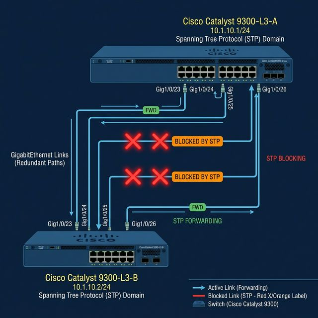
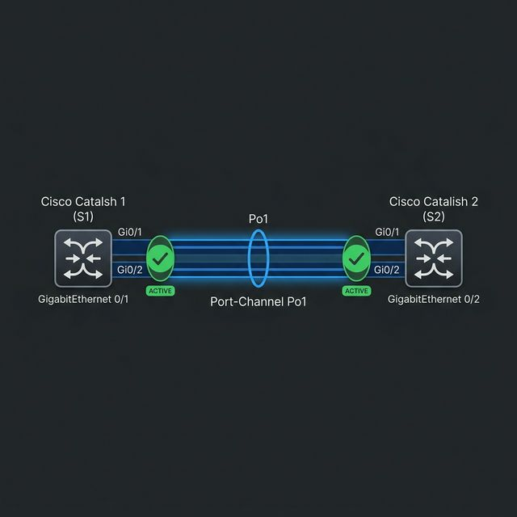
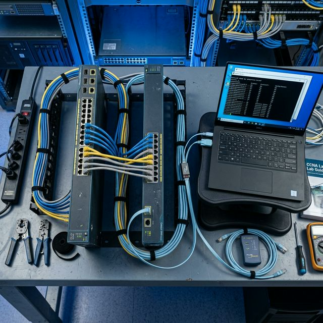

EtherChannel
Объединение нескольких физических каналов в одно логическое соединение — увеличение пропускной способности, резервирование и полная совместимость с STP.
Объединение нескольких физических каналов в одно логическое соединение — увеличение пропускной способности, резервирование и полная совместимость с STP.
Протокол Spanning Tree (STP) предотвращает петли на 2-м уровне, блокируя резервные пути. Это приводит к простою каналов и ограничению скорости.

Объедините до 8 портов в один канал — получите до 800 Мбит (Fast) или 8 Гбит (Gigabit) пропускной способности.
Трафик распределяется по всем активным линкам на основе MAC, IP или портов.
STP видит весь бандл как один порт — ни один канал не блокируется, вся емкость используется.
При отказе одного линка трафик мгновенно перенаправляется на остальные — без участия и задержек STP.

| Режим | Поведение |
|---|---|
| On | Принудительный канал — без согласования |
| Desirable | Активно инициирует PAgP |
| Auto | Пассивно ожидает PAgP |
| Режим | Поведение |
|---|---|
| On | Принудительный канал — без согласования |
| Active | Активно инициирует LACP |
| Passive | Пассивно ожидает LACP |
Все порты должны иметь одинаковую скорость и режим дуплекса. Несоответствие блокирует создание канала.
Все порты должны принадлежать одному VLAN (access) или быть транками с одинаковым Native VLAN.
На транковых EtherChannel список разрешенных VLAN должен быть идентичен на обоих концах.
Вносите изменения в логический интерфейс Port-Channel, а не в отдельные физические порты.
Хотя бы одна сторона должна быть активной: Active/Active или Active/Passive. Passive/Passive не сработает.
Создайте необходимые VLAN и назначьте IP-адрес управления на VLAN 10.
Принудительно включите режим транка и ограничьте список VLAN.
Назначьте порты в группу 1 с режимом LACP active.
| Устройство | Интерфейс | IP-адрес | Маска |
|---|---|---|---|
| S1 | VLAN 10 | 192.168.10.11 | 255.255.255.0 |
| S2 | VLAN 10 | 192.168.10.12 | 255.255.255.0 |
| PC-A | NIC | 192.168.20.3 | 255.255.255.0 |
| PC-B | NIC | 192.168.20.4 | 255.255.255.0 |
| VLAN | Имя | Порты |
|---|---|---|
| 10 | Management | VLAN 10 SVI |
| 20 | Clients | S1: F0/6 · S2: F0/18 |
| 999 | Parking_Lot | S1: F0/3-5, F0/7-24, G0/1-2 |
| 1000 | Native | N/A (native) |

Краткая сводка по группам каналов и состояниям портов. Основная команда диагностики.
Статус, пропускная способность и инкапсуляция логического интерфейса Po1.
Подтверждает работу Po1 как транка, показывает Native VLAN и разрешенные VLAN.
Po1 (Port-Channel 1) — это виртуальный интерфейс, объединяющий физические порты. Все протоколы (STP, VLAN) работают с Po1 как с обычным портом.
Порты в разных VLAN или с разными Native VLAN не смогут объединиться в канал.
Транк настроен не на всех портах. Всегда настраивайте транк на интерфейсе Port-Channel.
Если список разрешенных VLAN не совпадает на концах — EtherChannel не соберется.
Passive↔Passive или Auto↔Auto никогда не договорятся. Одна сторона должна быть активной.
Объединение до 8 портов. STP видит один канал — нет блокировок, вся емкость работает.
PAgP (Cisco) и LACP (стандарт). LACP предпочтительнее для универсальных сетей.
Параметры портов на обоих коммутаторах должны быть идентичны: скорость, дуплекс, VLAN.